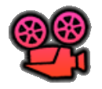

RISORSE CULTURALI
Borghi d'Eccellenza n. 6
Borghi, edifici, luoghi storico-culturali n. 96
Difensive
Castelli n. 1
Edifici fortificati n. 4
Religiose
Basiliche n. 1
Chiese n. 73
Santelle n. 9
Arte religiosa n. 5
Pitture pedagogiche n. 3
Museali
Musei n. 33
Ecomusei n. 6
Reti e itinerari
Pittorici n. 2
degli Intarsiatori n. 2
Vie della posta e scambi transalpini n. 2
Via del Ferro n. 1
Dogane e dazi n. 2
Eventi

Religiosi n. 53
Laici n. 41
RISORSE naturali/CULTURALI
Santuari n. 20
RISORSE NATURALI
Parco Regionale - ZPS n. 2
SIC, riserve, PLIS n. 13
Siti interesse
Naturalistico n. 33
Morfologico n. 31
Roccoli n. 37
Sentieri escursionistici n. 25
Laghi e fiumi n. 29
Infrastrutture sportive n. 25
MICRO-BUSINESS S-LOW
Ricettività n. 47
Ristorazione n. 42
MOBILITA' S-LOW
Percorsi ciclabili n. 2
Punti informativi n. 12
Modello Digitale del Terreno
Strade Google Earth
Toponimi Google Earth
Latitudine, Longitudine
Help

 Pittorici n. 2
Pittorici n. 2
 Laici n. 41
Laici n. 41
 Laghi e fiumi n. 29
Laghi e fiumi n. 29